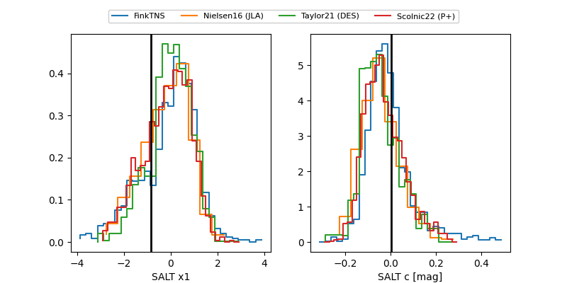

FINK: ZTF25abptkln
Lasair: ZTF25abptkln
ALeRCE: ZTF25abptkln
ZTF25abptkln (ztf,fink)
equatorial (ra, dec) = (262.7527,+64.26149)
galactic (l, b) = (93.8634,+32.92956)

last ztfg=19.78, ztfr=19.78
1 ztfg, 1 ztfr detections